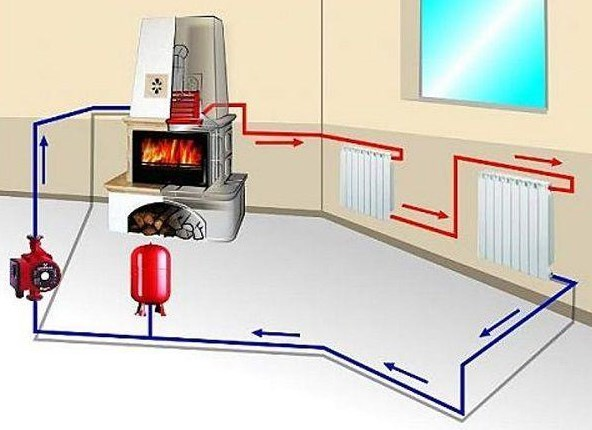

Сайт посвящённый каминам
Камин с водяным контуром
 Современный и удобный вариант обогрева частного дома — печь-камин с водяным контуром отопления. При помощи этого устройства можно обогреть все помещения до комфортной температуры даже в сильный мороз. Стальные или чугунные печи с водяным контуром можно приобрести в готовом виде. Кирпичный камин можно выложить своими руками или пригласить для этого специалиста. Читать далее